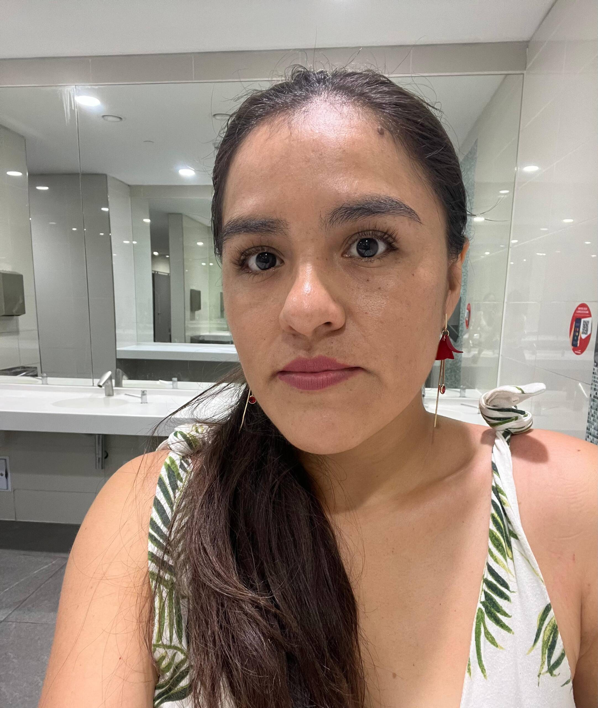

Mi nombre es Yna Cely Monteza Rodriguez 😊, Tengo 28 años, Soy de Perú. Durante un tiempo residí en Chile, esta experiencia me permitió valorar aún más lo que tenemos en mi país, disfruto explorar nuevas culturas y expandir mis horizontes 🌍✨. Una de mis experiencias más gratificantes ha sido mi labor como voluntaria enseñando lengua de señas peruana a niños sordos en San Martín, Perú 🤟 ❤️. Actualmente, soy voluntaria del Programa YAV, trabajamos con AETE 🙌. Me mueve mucho la idea de poder crecer espiritual y personalmente, y poder aprender de mi comunidad porque pienso que mi país es hermoso y multicultural 🌳🌿🌈 🤝.
Fue una semana de muchos aprendisajes donde abordamos diferentes temas de interés para nuestro año de voluntariado. Al mismo tiempo que tuve la oportunidad de ser espectadora de preciosos amaneceres con vista al mar e inolvidables atardeceres. Me levantaba muy temprano para caminar por la orilla de la playa, sobre la arena, con los pies descalzos, sintiendo la brisa del mar, escuchando el sonido de las olas, y el canto de las aves. En algunas ocasiones, vimos delfines pasando frente a nosotras, un espectáculo precioso y mágico. Al mediodía, incluso fuimos testigos de ballenas que pasaban saltando, Wao, casi lloré de la emoción de ver esa majestuosidad frente a mis ojos, pensé que estaba soñando, nunca me imaginé ver ballenas; no podía creer lo que estaba viendo, que regalo más hermoso de la vida, me pone feliz el solo recordarlo. Estas experiencias me hicieron sentir una conexión profunda con los océanos, con el mar, ¡porque nosotros somos tierra!, ¡somos fuego!, ¡somos mar!, ¡somos aire!, somos los cuatro elementos que componen la naturaleza, y si descuidamos uno de estos 4 elementos, pues descuidamos todo, porque todo es parte de un todo, de un conjunto de maravillas, por lo tanto, merece y debe ser cuidada, protegida y amada. Estamos llamados a cuidar la naturaleza; así como la cultura Moche, que veían en el mar, la majestuosidad de la soberanía, de un creador, pero también la oportunidad de poder desarrollar su cultura. Reflexioné sobre todo lo que ella nos regala. Si cuidamos de la naturaleza, ella nos devolverá con aire puro, hermosas vistas y más vida. Si cuidamos el mar podemos seguir disfrutando de estos bailes de ballenas, del salto de los delfines, y de todo lo mágico que te puedas imaginar. Esta conexión me hizo valorar la calidad de vida que la naturaleza puede ofrecernos, y como no, regresar con una mentalidad renovada. Al conectarme con este lugar, sentí que también conecté más conmigo misma y con Dios. Realmente fue una experiencia exquisita, ame cada minuto allí.